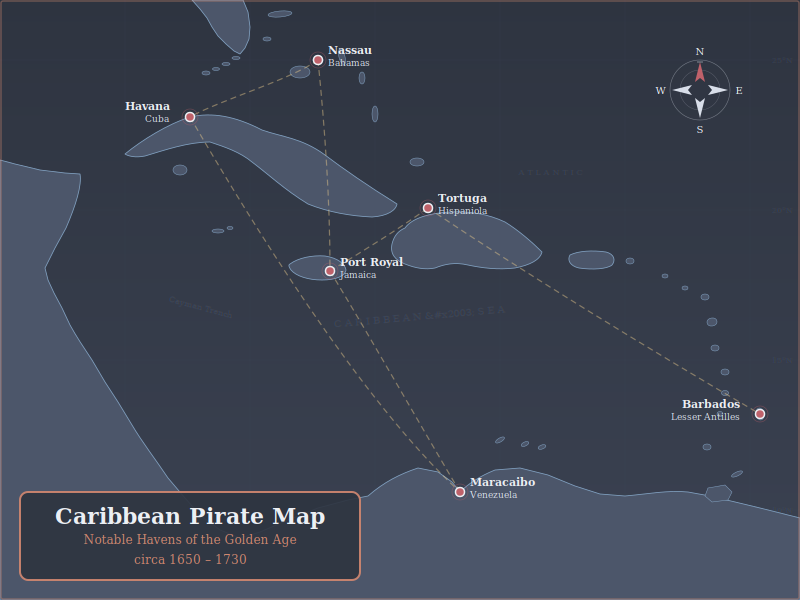

Notable havens of the Golden Age, 1650–1730
Known as “the wickedest city on Earth,” Port Royal served as the unofficial capital of Caribbean buccaneering. Privateers operated under English letters of marque, raiding Spanish shipping with legal cover. The city was destroyed by an earthquake in 1692, sinking much of the waterfront into the sea.
A rocky island off the northwest coast of Hispaniola, Tortuga was the original stronghold of the buccaneers—French hunters turned raiders who preyed on Spanish galleons. Its natural harbor and defensible terrain made it nearly impossible for colonial navies to root out.
The “Republic of Pirates” was a loose confederacy run by Blackbeard, Charles Vane, and the Flying Gang. Nassau’s shallow harbor kept warships at bay while hundreds of pirates operated freely, until Woodes Rogers arrived as royal governor and offered pardons in 1718.
Havana was the assembly point for the Spanish treasure fleets. Galleons loaded with silver and gold gathered here before crossing the Atlantic, making the surrounding waters the richest hunting ground in the Caribbean for pirates and privateers alike.
Henry Morgan sacked Maracaibo in 1669, and L’Olonnais raided it before him. Located on a narrow strait leading to Lake Maracaibo, the city was wealthy from trade and vulnerable to seaborne assault, making it a repeated target for buccaneer expeditions.
The easternmost Caribbean island served as both a legitimate trading hub and a convenient waypoint for pirates working the Windward Passage. Its sugar wealth attracted raiders, while its position at the edge of the island chain made it a gateway between the Atlantic and the Caribbean Sea.